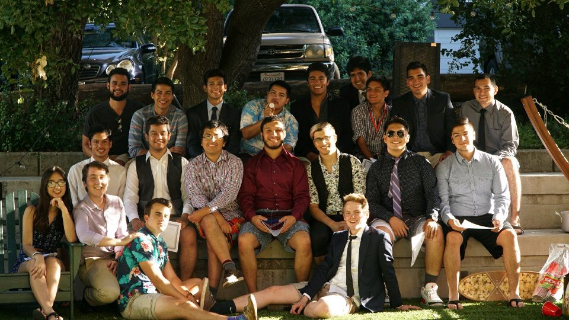

Maribel is a junior at Stanford University majoring in Computer Science with a minor in Education. She was raised in Albuquerque, New Mexico, where she discovered her passion for engineering. She sought out every opportunity that would allow her to explore different STEM fields. She completed four different internships at the University of New Mexico with concentrations in Chemical Engineering, Electrical Engineering, and Computer Science. She continues to impress by teaching people how to code, interning at a national lab, and successfully completing her class courses.
She is also very passionate about community service. She has completed hundreds of hours in community service including mentoring students, tutoring, helping her under-resourced high school provide more opportunities to students, and staying actively engaged in the Latinx community on Stanford's campus.
On her free time, she spends a lot of time teaching and dancing Salsa and Bachata as part of Salseros de Stanford, attending musical productions, and riding horses.
Her yearning to learn and help others is astounding. She will have such a bright future.
In high school, Maribel noticed a lack of opportunity for more advanced education opportunities in her community. As a high achieving student, herself, she found ways to go above and beyond by taking additional college classes, internships, etc. However, she still wanted others to have more readily available opportunities. So she conducted over 20 interviews to obtain a better understanding of what AP/Honors teachers have to complete in order to ensure the success of their classes, students that have been exposed to more advanced opportunities to hear about the challenges and benefits of taking more advanced courses were, and student advocates to learn about the best ways to help support students that are looking for more opportunities. She took over three school wide surveys to see if there was student demand for AP classes. She wrote and presented a proposal for the introduction of three new AP classes at the school the following year. They were all aproved. She now continuously returns to campus to provide feedback, check up on the progress of the classes and encourage highly motiviated students to pursue a degree at competitive universities and seek out life changing opportunities.
As Vice President of Hermanos de Stanford, a latinx service group at Stanford University, Maribel attempted to change the culture of the group that was very heirarical to be more inclusive to new members. She established a new program called Hermanitos that would allow incoming members to get to meet older members, engage in fun activities, and participate in community service. There were over 30 matches made between new and old members and they continue to interact with each other and provide support throughout their four years in college.

This site is open source at:
github.com/mcardiel1